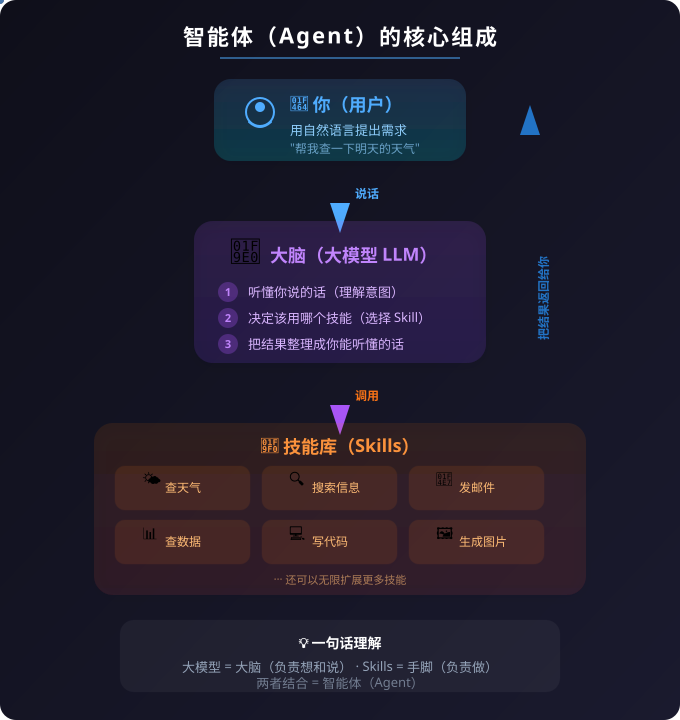

Skills 紹介
Skillsは、AIエージェントに専門的なスキルと知識を追加するためのオープンなフォーマットです。
Skillsを通じて、特定分野の専門知識、ワークフロー、ベストプラクティスを再利用可能なスキルパッケージにカプセル化し、AIエージェントが必要に応じて自動的に呼び出せるようにすることができます。
Skillsを学ぶ前に、もっと基本的な問題を明確にしましょう：AIエージェントとは何か？
みなさんはChatGPT、豆包、通義千問といったツールを使ったことがあるでしょう？文字で質問すると、文字で回答が返ってきます。これが私たちがよく言う大規模言語モデル（LLM）チャットボット。
ChatGPT、豆包、通義千問といったツールはとても賢いですが、それらには致命的な問題が一つあります：それは話すことはできても、実行することはできません。
あなたが「今日の北京の天気はどうですか？」と尋ねても、それはトレーニング時に学んだ知識に基づいて答えを推測するだけで、実際に天気を確認することはありません。
エージェント = あなたの言葉を理解し、自分で考え、実際に行動できるAIアシスタントです。
チャットボットは「口」の代わり、エージェントは本当の「手」の代わりです。
では、エージェントとは何でしょうか？
エージェント = 大規模言語モデル + 実際に行動できる能力。
先ほどの例で見てみましょう：
| チャットボット | エージェント | |
|---|---|---|
| あなた：「今日の北京の天気はどうですか？」 | 北京は今日はおそらく晴れ、気温は約25度（推測） | 実際に天気APIを呼び出して、「今日の北京は曇り、23°C、湿度45%」と教えてくれる（実際のデータ） |
| あなた：「先月の売上を調べてください」 | 「申し訳ありません。あなたのデータベースにはアクセスできません」 | 実際にデータベースを調べ、データを取得して見せてくれる |
| あなた：「明日の上海行きの高速鉄道のチケットを1枚予約してください」 | 「12306のウェブサイトで予約できますよ」 | 実際に12306を開き、チケットを検索し、座席を選び、注文してくれる |
違いは一言で言えば、チャットボットは口先だけ、エージェントは本当にやってくれる。
エージェントはどうやってそれを実現するのか？
エージェントはおおよそ次のような要素で構成されています：

3つのステップ：
- あなたが何を求めているかを理解する（大規模言語モデルによる）
- どのスキルで実行するかを決定する（大規模言語モデルによる）
- スキルを実行し、結果をあなたに渡す（Skillsによる）
あなたの身の回りで既に見られるエージェント
実は、多くの製品がすでにエージェントを活用しています：
- Siri / 小愛同学 / 天猫精霊— 「アラームをセットして」と言うと、実際にセットしてくれます。「自分でセットできますよ」と教えるだけではありません。
- GitHub Copilot— チャットだけでなく、実際にコードを書いたり修正したりしてくれる
- さまざまなAIカスタマーサポート— 質問に答えるだけでなく、注文確認、返金、住所変更もサポートしてくれます
- 自動運転— これもエージェントの一種で、環境を感知し、意思決定し、操作を実行します
エージェントのSkillsとは何か？
智能体的大模型 = 大脑（负责理解、决策、说话） Skills = 手和脚（负责动手干活）
Skillsのないエージェントは、脳はあるが手足がない人のようなものです——何でも分かっているのに、何もできません。
エージェント自体は非常に賢いですが、誰かが教える必要があります——この具体的な環境で、この具体的なタスクを完了するために、どのツールを使い、どの手順を踏み、どのような落とし穴に注意すべきかを。
この説明書こそが、Skillと呼ばれるものです。

より身近な例えでSkillsを理解しましょう：
把智能体想象成一位聪明的新员工，他能力很强，但第一天来公司什么流程都不懂。 Skill 就是公司的 SOP 手册（标准操作流程）。 有了这本手册，他就知道：遇到客户投诉该怎么处理、出差报销流程是什么、代码提交要走哪些审核……不需要每次都问你，能自己完成任务。
Skillsは技術的にはMarkdownファイル（SKILL.md）であり、そのタスクの完全な実行ガイドが書かれています。これは人間によって作成され、エージェントがタスク実行時に自動的に読み取って従います。
Skillsはどんな問題を解決できるのか？
シナリオ1：Skillsがない場合
例えば、あなたがClaudeに頼むとしますWord文書を1つ生成してもらう：
你：帮我生成一个项目计划书的 Word 文档 Claude：好的，以下是项目计划书内容： （输出一堆 Markdown 文本……）
結果：Claudeが出力するのはプレーンテキストだけで、実際の.docxファイルではありません。それは、あなたの環境にどのようなライブラリがあるか、ファイルをどこに置くべきか、フォーマット要件が何かを知らないからです。
シナリオ2：Skillsがある場合
システムにdocxSkillが装備されると、Claudeは同じリクエストを受けたとき、次のように動作します：
- 「これはWord文書タスクである」と自動認識 → スキルを起動
docxSkill - Skillファイルを読み取り、正しいライブラリ（
python-docx）と出力パス（/mnt/user-data/outputs/） - Skillの手順に従って、実際の
.docxファイルを生成する - そのファイルをあなたに渡してダウンロードできるようにする
結果はまったく異なります——一つはチャットの返信であり、もう一つはすぐに開けるWordファイルです。

Skillsの中核の価値のまとめ
この章を学び終えたら、次の3点を覚えておきましょう：
1、Skillsはエージェントを「話せるだけ」から「働ける」存在に変える：Skillsがなければ、エージェントはただの博識なチャットボットにすぎません。Skillsがあれば、本当にタスクを完了できる実行者になります。
2、Skillsは再利用可能な経験パッケージである：誰かがWord文書生成の経験をSkillに書き込めば、誰が、何回呼び出しても、安定して一貫した結果が得られます。質問する人が変わっても機能しなくなることはありません。
3、Skillsは人間とAIの協働の架け橋である
人間は分野の知識、プロセスの経験、環境の制約をSkillに書き込みます。AIはそれを読み取って実行します。Skillsこそがこの橋です——人間は「どうやるか」の定義に集中し、AIは実際に実行することを担当します。
| 概念 | 一言でまとめると |
|---|---|
| AIエージェント | 知覚、推論、行動ができるAIシステム。チャットだけでなく、タスクも実行できる |
| Skills | エージェントに「特定の種類のタスクを完了する方法」を教える説明書（Markdownファイル） |
| Skillsの価値 | タスクの実行を正確で、安定した、再利用可能なものにする |
SkillsとMCPの違い
Skillsは知識の再利用に、MCPは能力の拡張に。
Skills
知識の再利用
- 知識の共有：経験、ベストプラクティス、ワークフロー
- シンプルなMarkdownファイルベースで、誰でも作成できる
- 段階的な読み込みで、Token使用効率が高い
- サーバーやバックエンドの設定が不要
- Web / Desktop / CLIに対応
MCP
能力の拡張
- 機能の拡張：API、データベース、外部ツールとの接続
- コーディング能力とサーバー側の設定が必要
- 起動時にすべてのツール定義をロードする
- 外部システムとの統合能力が高い
- より高いToken消費と複雑さ
スキルの使用シーン
Agent Skillsはさまざまなシーンに適用できます。例としては、以下に限りませんが：
- 分野の専門知識：法務レビュー、データ分析、コーディング規約などの専門分野の知識をスキルにカプセル化する
- ワークフロー：複数ステップのタスクプロセスを繰り返し使用可能なスキルとして固定化する
- 会社の規約・規範：会社固有のコーディング規約、コミット手順、ドキュメントテンプレートなどをスキルにカプセル化する
- ツール統合：特定のツールの使用方法とAPI呼び出しをカプセル化する
Agent Skillsをサポートするツール
Agent Skillsはオープンな標準規格であり、以下のような多くのAIツールでサポートされています：
- Claude Code
- OpenCode
- GitHub Copilot
- OpenAI Codex
- およびその他多くのAIエージェントツール
つまり、スキルを一度作成するだけで、さまざまなツールで使用できるということです。
その他の拡張
クリックしてノートを共有
ノートは本記事の内容を拡張したものである必要があります！
記事投稿は、ここをクリックしてください
登録招待コードの取得方法
ノートを共有する前にログインする必要があります！
登録招待コードの取得方法